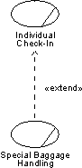

| Рекомендация: Extend-Relationship in the Business Use-Case Model |
 |
|
| Связанные элементы |
|---|
ExplanationExtend-relationships optionally, or conditionally, add a flow to a business use case that is already complete in itself. For example, Special Baggage Handling is inserted into Individual Check-in in cases where the passenger must go to the special baggage counter. For comparison, see also Work Product Guideline: Extend-Relationship in the system use-case model. UseOnce you have outlined the workflow of a business use case, you may find behavior that is conditional or optional. If this part of the behavior is substantial you will probably want to describe it separately. The most natural approach is to describe it in a separate subsection of the workflow documentation, but an alternative is describing it in a separate business use case that is an extension to the original business use case. The latter approach is especially interesting if the extracted part is also substantial, logically connected, naturally delimited, and if you want to keep the original business use case simple. Or if the same optional extension is relevant to several business use cases. An instance of a business use case that is optionally extended by another use case first follows the description of the base use case and then, if some condition is fulfilled, turns to follow the extending business use case?s description instead. When it reaches the end of the extension use case, it returns to following the description of the base.  The workflow of the Special Baggage Handling use case is inserted into the Individual Check-in use case with an extend-relationship. The business use cases being extended have to be meaningful and complete in themselves, even if the workflow of the added business use case is not executed. Most extending business use cases cannot be executed on their own. For example, use an extend-relationship to augment a business use case to:
|
© Copyright IBM Corp. 1987, 2006. Все права защищены.. |